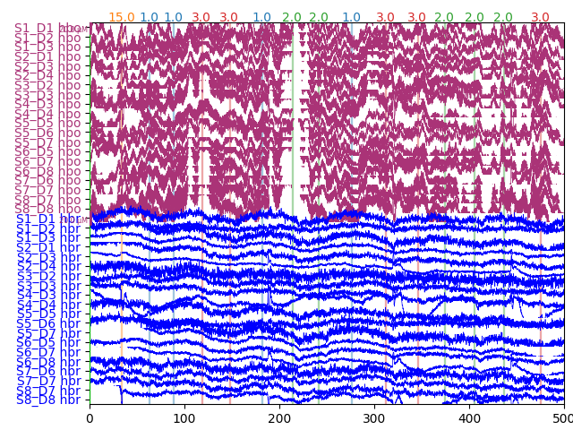
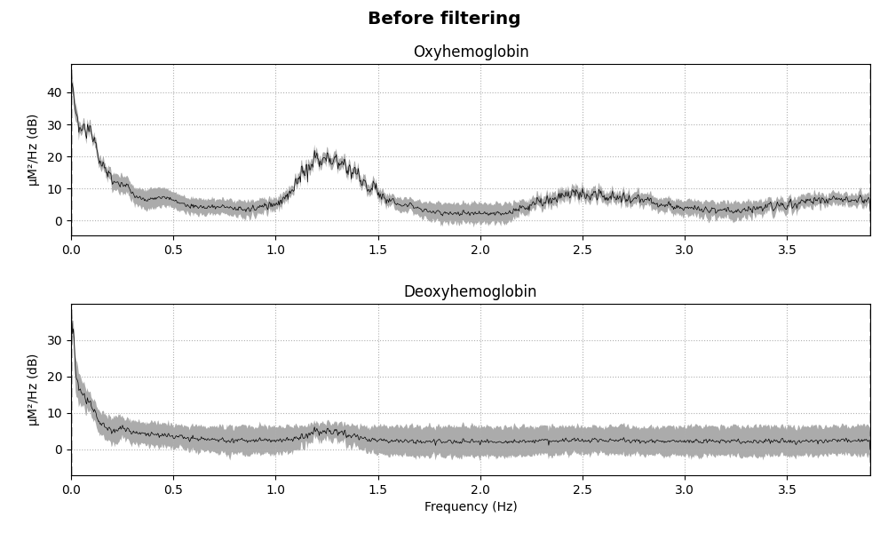
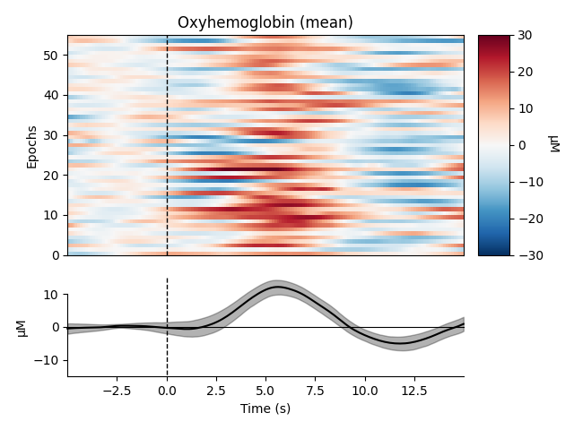
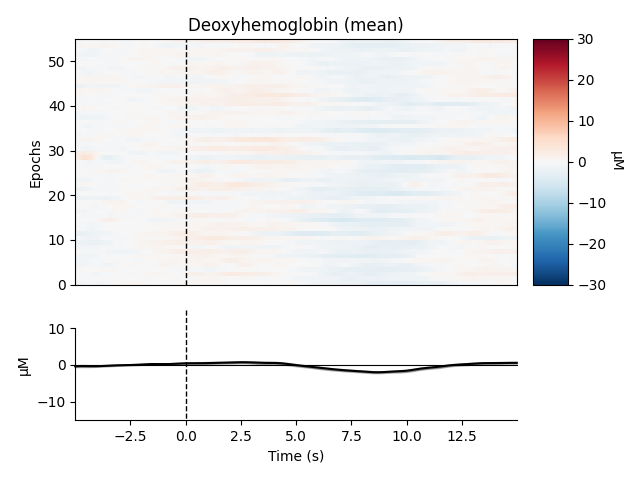
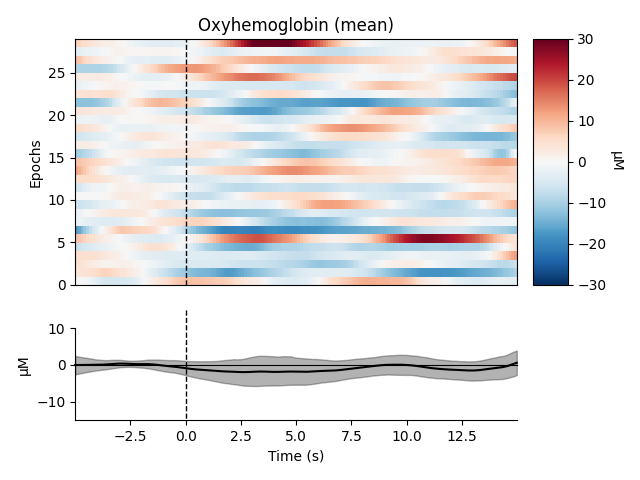
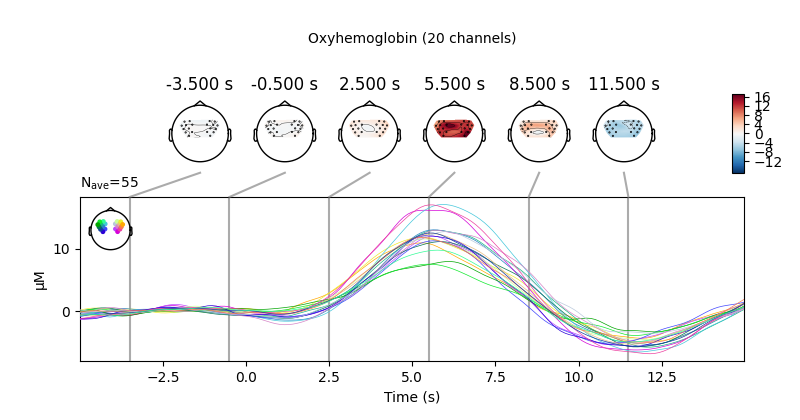
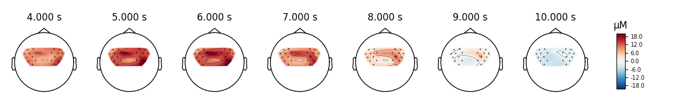
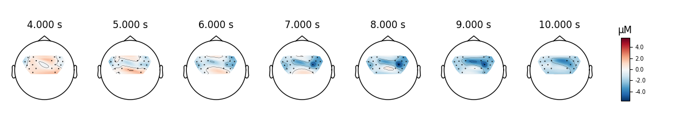

Note
Click here to download the full example code
Preprocessing functional near-infrared spectroscopy (fNIRS) data¶
This tutorial covers how to convert functional near-infrared spectroscopy (fNIRS) data from raw measurements to relative oxyhaemoglobin (HbO) and deoxyhaemoglobin (HbR) concentration.
Here we will work with the fNIRS motor data.
import os
import numpy as np
import matplotlib.pyplot as plt
from itertools import compress
import mne
fnirs_data_folder = mne.datasets.fnirs_motor.data_path()
fnirs_raw_dir = os.path.join(fnirs_data_folder, 'Participant-1')
raw_intensity = mne.io.read_raw_nirx(fnirs_raw_dir, verbose=True).load_data()
Out:
Loading /home/circleci/mne_data/MNE-fNIRS-motor-data/Participant-1
Reading 0 ... 23238 = 0.000 ... 2974.464 secs...
Selecting channels appropriate for detecting neural responses¶
First we remove channels that are too close together to detect a neural response. To achieve this we pick all the channels that are not considered to be short (less than 1 cm distance between optodes).
picks = mne.pick_types(raw_intensity.info, meg=False, fnirs=True)
dists = mne.preprocessing.nirs.source_detector_distances(
raw_intensity.info, picks=picks)
raw_intensity.pick(picks[dists > 0.01])
raw_intensity.plot(n_channels=len(raw_intensity.ch_names), duration=500)
Converting from raw intensity to optical density¶
The raw intensity values are then converted to optical density.
raw_od = mne.preprocessing.nirs.optical_density(raw_intensity)
raw_od.plot(n_channels=len(raw_od.ch_names), duration=500)
Evaluating the quality of the data¶
At this stage we can quantify the quality of the coupling between the scalp and the optodes using the scalp coupling index. This method looks at the presence of a prominent synchronous signal in the frequency range of cardiac signals across both photodetected signals.
As this data is clean and the coupling is good for all channels we will not mark any channels as bad based on the scalp coupling index.
sci = mne.preprocessing.nirs.scalp_coupling_index(raw_od)
fig, ax = plt.subplots()
ax.hist(sci)
ax.set(xlabel='Scalp Coupling Index', ylabel='Count', xlim=[0, 1])
In this example we will mark all channels with a SCI less than 0.5 as bad (this dataset is quite clean, so no channels are marked as bad).
raw_od.info['bads'] = list(compress(raw_od.ch_names, sci < 0.5))
Converting from optical density to haemoglobin¶
Next we convert the optical density data to haemoglobin concentration using the modified Beer-Lambert law.
raw_haemo = mne.preprocessing.nirs.beer_lambert_law(raw_od)
raw_haemo.plot(n_channels=len(raw_haemo.ch_names), duration=500)
Removing heart rate from signal¶
The haemodynamic response has frequency content predominantly below 0.5 Hz. An increase in activity around 1 Hz can be seen that is due to the heart beat and is unwanted. So we use a low pass filter to remove this. A high pass filter is included to remove slow drifts in the data.
fig = raw_haemo.plot_psd(average=True)
fig.suptitle('Before filtering', weight='bold', size='x-large')
fig.subplots_adjust(top=0.88)
raw_haemo = raw_haemo.filter(0.05, 0.7, h_trans_bandwidth=0.2,
l_trans_bandwidth=0.02)
fig = raw_haemo.plot_psd(average=True)
fig.suptitle('After filtering', weight='bold', size='x-large')
fig.subplots_adjust(top=0.88)
- 
- 
Out:
Effective window size : 262.144 (s)
Effective window size : 262.144 (s)
Filtering raw data in 1 contiguous segment
Setting up band-pass filter from 0.05 - 0.7 Hz
FIR filter parameters
---------------------
Designing a one-pass, zero-phase, non-causal bandpass filter:
- Windowed time-domain design (firwin) method
- Hamming window with 0.0194 passband ripple and 53 dB stopband attenuation
- Lower passband edge: 0.05
- Lower transition bandwidth: 0.02 Hz (-6 dB cutoff frequency: 0.04 Hz)
- Upper passband edge: 0.70 Hz
- Upper transition bandwidth: 0.20 Hz (-6 dB cutoff frequency: 0.80 Hz)
- Filter length: 1289 samples (164.992 sec)
Effective window size : 262.144 (s)
Effective window size : 262.144 (s)
Extract epochs¶
Now that the signal has been converted to relative haemoglobin concentration, and the unwanted heart rate component has been removed, we can extract epochs related to each of the experimental conditions.
First we extract the events of interest and visualise them to ensure they are correct.
events, _ = mne.events_from_annotations(raw_haemo, event_id={'1.0': 1,
'2.0': 2,
'3.0': 3})
event_dict = {'Control': 1, 'Tapping/Left': 2, 'Tapping/Right': 3}
fig = mne.viz.plot_events(events, event_id=event_dict,
sfreq=raw_haemo.info['sfreq'])
fig.subplots_adjust(right=0.7) # make room for the legend
Out:
Used Annotations descriptions: ['1.0', '2.0', '3.0']
Next we define the range of our epochs, the rejection criteria, baseline correction, and extract the epochs. We visualise the log of which epochs were dropped.
reject_criteria = dict(hbo=80e-6)
tmin, tmax = -5, 15
epochs = mne.Epochs(raw_haemo, events, event_id=event_dict,
tmin=tmin, tmax=tmax,
reject=reject_criteria, reject_by_annotation=True,
proj=True, baseline=(None, 0), preload=True,
detrend=None, verbose=True)
epochs.plot_drop_log()

Out:
90 matching events found
Applying baseline correction (mode: mean)
Not setting metadata
0 projection items activated
Loading data for 90 events and 157 original time points ...
Rejecting epoch based on HBO : ['S4_D4 hbo']
Rejecting epoch based on HBO : ['S4_D4 hbo', 'S8_D8 hbo']
Rejecting epoch based on HBO : ['S4_D4 hbo']
Rejecting epoch based on HBO : ['S4_D4 hbo', 'S8_D8 hbo']
Rejecting epoch based on HBO : ['S1_D1 hbo', 'S3_D3 hbo', 'S4_D4 hbo', 'S7_D6 hbo', 'S7_D7 hbo', 'S8_D8 hbo']
Rejecting epoch based on HBO : ['S4_D4 hbo', 'S6_D8 hbo', 'S8_D8 hbo']
6 bad epochs dropped
View consistency of responses across trials¶
Now we can view the haemodynamic response for our tapping condition. We visualise the response for both the oxy- and deoxyhaemoglobin, and observe the expected peak in HbO at around 6 seconds consistently across trials, and the consistent dip in HbR that is slightly delayed relative to the HbO peak.
- 
Out:
55 matching events found
No baseline correction applied
Not setting metadata
0 projection items activated
0 bad epochs dropped
55 matching events found
No baseline correction applied
Not setting metadata
0 projection items activated
0 bad epochs dropped
combining channels using "mean"
combining channels using "mean"
We can also view the epoched data for the control condition and observe that it does not show the expected morphology.
- 
- 
Out:
29 matching events found
No baseline correction applied
Not setting metadata
0 projection items activated
0 bad epochs dropped
29 matching events found
No baseline correction applied
Not setting metadata
0 projection items activated
0 bad epochs dropped
combining channels using "mean"
combining channels using "mean"
View consistency of responses across channels¶
Similarly we can view how consistent the response was across the optode pairs that we selected. All the channels in this data were located over the motor cortex, and all channels show a similar pattern in the data.
fig, axes = plt.subplots(nrows=2, ncols=2, figsize=(15, 6))
clims = dict(hbo=[-20, 20], hbr=[-20, 20])
epochs['Control'].average().plot_image(axes=axes[:, 0], clim=clims)
epochs['Tapping'].average().plot_image(axes=axes[:, 1], clim=clims)
for column, condition in enumerate(['Control', 'Tapping']):
for ax in axes[:, column]:
ax.set_title('{}: {}'.format(condition, ax.get_title()))
Plot standard fNIRS response image¶
Next we generate the most common visualisation of fNIRS data, plotting both the HbO and HbR on the same figure to illustrate the relation between the two signals.
evoked_dict = {'Tapping/HbO': epochs['Tapping'].average(picks='hbo'),
'Tapping/HbR': epochs['Tapping'].average(picks='hbr'),
'Control/HbO': epochs['Control'].average(picks='hbo'),
'Control/HbR': epochs['Control'].average(picks='hbr')}
# Rename channels until the encoding of frequency in ch_name is fixed
for condition in evoked_dict:
evoked_dict[condition].rename_channels(lambda x: x[:-4])
color_dict = dict(HbO='#AA3377', HbR='b')
styles_dict = dict(Control=dict(linestyle='dashed'))
mne.viz.plot_compare_evokeds(evoked_dict, combine="mean", ci=0.95,
colors=color_dict, styles=styles_dict)
Out:
combining channels using "mean"
combining channels using "mean"
combining channels using "mean"
combining channels using "mean"
View topographic representation of activity¶
Next we view how the topographic activity changes throughout the response.
times = np.arange(-3.5, 13.2, 3.0)
topomap_args = dict(extrapolate='local')
epochs['Tapping'].average(picks='hbo').plot_joint(
times=times, topomap_args=topomap_args)
Compare tapping of left and right hands¶
Finally we generate topo maps for the left and right conditions to view the location of activity. First we visualise the HbO activity.
- 
- 
And we also view the HbR activity for the two conditions.
epochs['Tapping/Left'].average(picks='hbr').plot_topomap(
times=times, **topomap_args)
epochs['Tapping/Right'].average(picks='hbr').plot_topomap(
times=times, **topomap_args)

- 
And we can plot the comparison at a single time point for two conditions.
fig, axes = plt.subplots(nrows=2, ncols=4, figsize=(9, 5))
vmin, vmax, ts = -8, 8, 9.0
evoked_left = epochs['Tapping/Left'].average()
evoked_right = epochs['Tapping/Right'].average()
evoked_left.plot_topomap(ch_type='hbo', times=ts, axes=axes[0, 0],
vmin=vmin, vmax=vmax, colorbar=False,
**topomap_args)
evoked_left.plot_topomap(ch_type='hbr', times=ts, axes=axes[1, 0],
vmin=vmin, vmax=vmax, colorbar=False,
**topomap_args)
evoked_right.plot_topomap(ch_type='hbo', times=ts, axes=axes[0, 1],
vmin=vmin, vmax=vmax, colorbar=False,
**topomap_args)
evoked_right.plot_topomap(ch_type='hbr', times=ts, axes=axes[1, 1],
vmin=vmin, vmax=vmax, colorbar=False,
**topomap_args)
evoked_diff = mne.combine_evoked([evoked_left, -evoked_right], weights='equal')
evoked_diff.plot_topomap(ch_type='hbo', times=ts, axes=axes[0, 2],
vmin=vmin, vmax=vmax,
**topomap_args)
evoked_diff.plot_topomap(ch_type='hbr', times=ts, axes=axes[1, 2],
vmin=vmin, vmax=vmax, colorbar=True,
**topomap_args)
for column, condition in enumerate(
['Tapping Left', 'Tapping Right', 'Left-Right']):
for row, chroma in enumerate(['HbO', 'HbR']):
axes[row, column].set_title('{}: {}'.format(chroma, condition))
We can also look at the individual waveforms to see what is driving the topographic plot above.
fig, axes = plt.subplots(nrows=1, ncols=1, figsize=(6, 4))
mne.viz.plot_evoked_topo(epochs['Left'].average(picks='hbo'), color='b',
axes=axes, legend=False)
mne.viz.plot_evoked_topo(epochs['Right'].average(picks='hbo'), color='r',
axes=axes, legend=False)
# Tidy the legend
leg_lines = [line for line in axes.lines if line.get_c() == 'b'][:1]
leg_lines.append([line for line in axes.lines if line.get_c() == 'r'][0])
fig.legend(leg_lines, ['Left', 'Right'], loc='lower right')
Total running time of the script: ( 0 minutes 22.197 seconds)
Estimated memory usage: 8 MB